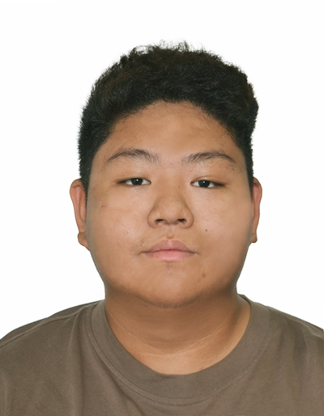

About Me

I focus on data system accuracy, software validation, and real-world technology deployments. Through my academic path and current aerospace industry internship, I have developed functional capabilities in processing vast unstructured datasets, auditing pipeline inputs, and organizing systems under operational constraints. I look forward to scaling these competencies within a Diploma track at Ngee Ann Polytechnic.
Data Engineering Intern, UAS Division
I am part of a computer vision project within the Unmanned Air Systems division under the Data Analytics Group. My ongoing engineering contributions and tasks include:
- Data Annotation — I use CVAT to accurately annotate drone blades, vehicle license plates, and kayaks in Singapore's reservoirs to supply critical inputs for training AI detection models (such as ResNet configurations).
- Application Architecture Support — I help write code to build a desktop application designed to process, ingest, and securely review video footage flagged directly by the AI models.
- Data Operations & Analytics — I manage raw dataset collections, run structural data cleaning protocols, organize internal catalogs, and record task durations to monitor processing efficiency.
This role allows me to gain real, practical experience in writing software and observing how industrial-scale AI systems operate under intense real-world constraints.
Swimming Coach & Administrator
I manage class schedules, attendance, and student progress records for a group of 50+ students using Excel.
One challenge I'm proud of: when enrollment suddenly increased by 25% with only a week's notice, I rebuilt our entire scheduling system to fit the new students without disrupting existing classes — redesigning the spreadsheet with better organization and built-in checks against double-bookings, rolled out within the week.
This taught me to stay calm and organized under pressure, and gave me real, practical experience managing operational data.
Class Chairperson
I act as the main point of contact between my classmates and lecturers/school administration — coordinating class activities, managing differing priorities, and taking initiative when issues come up within the class.
Practical Technical Builds & Logic Projects
Outside of standard classroom curriculum, I actively direct my time toward hands-on technology builds, complex hardware assembly, and low-level firmware architecture:
- Custom PC Engineering — I researched, sourced, and self-built a high-performance computer system from scratch. I spent weeks comparing hardware metrics, validating architectural constraints, and optimizing component pairings—integrating components like an RTX 4060Ti graphics engine and high-frequency DDR5 6000MHz RAM modules to study physical system integration firsthand.
- Hardware Disassembly & Console Modding — I executed complex physical disassemblies and custom firmware system overhauls on Nintendo 3DS and Nintendo Switch platforms. This involved handling delicate interior components, replacing internal physical parts, and safely flashing base operating systems by reading highly detailed technical manuals to mitigate hardware bricking risks.
- Early Applied Automation — I established my foundational interest in automation and system mechanics through early primary school robotics work, configuring structured loops and building initial mechanical frames.